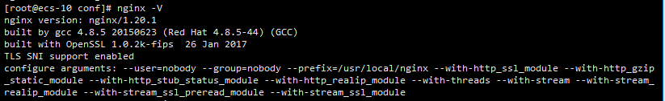
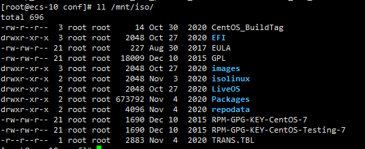
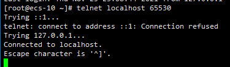

通过iso镜像搭建局域网yum
前言
本篇是Centos配置本地镜像源的续篇，上一篇文章总结了如何通过镜像在本机部署yum服务，本篇我们在此基础上进行一个简单的拓展，通过nginx工具实现在局域网内搭建我们的yum安装源。
安装前准备
本机安装配置
检查准备内容
本机yum检查

nginx安装检查

配置nginx
打开nginx配置文件
1 | vim /usr/local/nginx/conf/nginx.conf |
编辑配置文件，增加如下配置
1 | server { |
重载nginx
1 | #测试配置文件 |
配置开放端口
开放端口
1 | firewall-cmd --zone=public --add-port=65530/tcp --permanent |
telnet测试
1 | telnet xx.xxx.xxx.xx 65530 |
结果：

其他机器配置
配置LAN安装源
1 | #原配置文件备份 |
新配置文件
注意：替换xx.xx.xx.xx为局域网IP或域名
1 | [Nginx-yum] |
更新源
1 | #清理无用源 |
测试源
1 | #实际安装一个软件试试看，比如telnet |
参照引用
本博客所有文章除特别声明外，均采用 CC BY-NC-SA 4.0 许可协议。转载请注明来自 haydenzhou小木屋！
相关推荐

评论